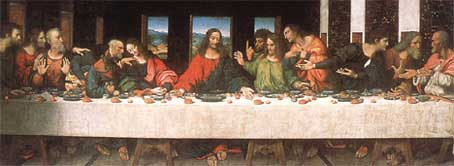

WilyWalnut.com
Meet the Genius in YOUR Brain!
Home- IQ Tests - Creativity - Genius - Brainstorming - Self-Help - BLOG Leonardo Da Vinci, The Geniuses' Genius: Open Up Vast New Tracts Of Unlimited Brain Power With The Leonardo Da Vinci Techniques!Leonardo da Vinci (1452-1519) was voted the ultimate genius in a poll of geniuses. It placed him above Einstein, Aristotle, Shakespeare and any other genius you care to name. What made this illegitimate son of a notary and a peasant girl grow to become one of the world's most famous artists and a scientist who was way "ahead of his time"? Well, foremost, he had an insatiable desire for new discoveries and knowledge. He wanted to know everything and he kept detailed records of what he observed. He even called himself a "Disciple of Experience" meaning that he learnt from life by experiencing, experimenting and observing.
Here are the 7 Dynamite Da Vinci "Noggin Knockers" to bash the boring out of your brain and replace it with Unadulterated Brilliance! Da Vinci Brain Bomb Number 1: CURIOSITY Curiosity may have killed the cat but it can make the cat-owner rich as King Solomon himself! Curiosity is the driving force of learning and development. Just as lust drives us to procreate and expand the species, curiosity drives us to learn and expand the mind. Knowledge is a tool of survival. We are built to be curious because in life you have to learn quick or die! But hot damn! We get most of the curiosity beaten, trampled and squashed out of us as we grow up and go to training "school". Most schools treat kids like Bonsai trees: stifle the roots, shape with wires into the correct shape, and cut back unwanted growth. I was lucky enough to live with my grandparents as a child and my grandfather John was a fine exemplar of curiosity. My grandmother Eileen called him a "nosey old so-and-so" as he peered out of the window at what the neighbours were doing, or hung over the fence asking probing questions about their lives and business. But John was a curious man. A man who could turn his hand to any skill from building, carpentry, decorating, welding, motor mechanics, electrical maintenace, engineering to running bars and hotels, book keeping, legal correspondence, and awesome people skills. I never really fathomed the limits of my grandad's abilities and he was an awesome role model in many areas. He told me: "Never be afraid to ask questions. If you want to get learn about anything, you've got to ask, otherwise how will you find out!" On the practical level, that also meant being willing to try something. If you want to find out how to do something, just start doing it. "Make lots of mistakes," he said. "If you are willing to make lots of mistakes at the beginning, you'll learn what you need to know in the end!" If your curiosity has gone comatose, the best way to kick-start it is to find a kid. Have one if neccessary!! Kid's are curiosity on legs. They ask the most off-planet questions that will really stump you and force you to question your universe again! The child you have is God's revenge (gift!) against your ignorance.
The fundamental toolkit of journalists and children is comprised of who, what, where, why, when and how. Children ask those questions harder and faster than Larry King interviewing in quicksand. "Why is the sky blue?"; "Why was I born?"; What do stars twinkle?"; "When are you going to die?"; "Who is God?"; "How come that man is homeless and we don't help him?"; "Where do babies come from?". They get all the good ones going. Rat-a-tat-tat it's like a questioning tommy gun on Valentine's day! Now you take your average curious kid, and then think what Leonardo da Vinci was like as a kid. Here's someone who was equally advanced in all the 7 intelligences outlined by Howard Gardner, the Harvard Professor of Education. You can just imagine the effect on his teachers. They were banging their heads against the walls trying to keep up with the awkward probing questions that Leonardo threw at them. Giorgio Vasari, the first ever Art Historian, related that Leonardo "caused continuous doubts for the master who taught him and often confounded him." What about you? Can you ask confounding questions? Take Rudyard Kipling's six honest serving men and apply them to the creative challenge areas in your life. Under each of the six, form as many questions as you can about the area you are focussing on. Do as many "what" questions as you can. Then do the same for the whys, whens, hows, wheres and whos! Try to ask the questions that have never been asked before. You've got to challenge yourself to wake up and observe this world anew. We are fed a mind-numbing diet of sound bites that quash curiosity. Break out of that. Get curious about the world again. This awesome creation is so replete with mysteries and magical phenomena that we have yet to work out and understand. What part will you play in probing the universe for new understanding, and improved ways of living our lives? Leonardo has been described as the man who "wouldn't take Yes for an answer." Don't you love that! That is ultimate curiosity! Pushing past the accepted answers to question-question-question! Is this really the right way to do it? Could this be stifling orders? Would it be better if... ? Challenge what you know. Make it stand up to the test of truth. A little knowledge is a dangerous thing. Great discoveries are walled in by incomplete knowledge. Take a sledge hammer to the text book tradition and blast through it. Fortunes are often found just the other side of the accepted way of doing things. Look at life as a hunt for treasure. Everywhere you go there are clues to where the treasure is buried. But you've got to sift and probe, be alert and aware, watch and question everything. When you do that, you will find the treasure. I know it. Curiosity Exercise: Look through the questions and notice if any dominant themes emerge. Are there any areas of life that you seem most concerned with? Such as money, work, relationships, love, or health? Pick your top 10 questions. The ones that seem the most important to you. You don't have to answer them right now. It's enough that you have organised them and know that they are important to you. Use the "Top 10 questions" technique on any area of your life where you are looking for improvements. It'll focus you on what's really important in that area. And the see-sawing effect of different angled questions will hone your mind and produce the innovative ideas and insights that you need.
Da Vinci Brain Bomb Number 2: TEST EVERYTHING You learn from books such as this. But you learn nothing until you test present knowledge and experience it for yourself. Scientists constantly have to challenge accepted knowledge. Even when it comes from geniuses... We progress forwards by standing on the shoulders of giants, but sometimes you have to give those giants a good kick in the bollocks to make sure that they are still up to the job! Knowledge is not a static thing. It actually pulses as it grows larger and larger. Knowledge is expanded by exceptional individuals, and contracts slightly when they die. Those unique people push through the accepted envelope of knowledge and discover more beyond that. They push the envelope to a new dimension. But that new dimension is never the limit of knowledge; it is only ever the currently accepted limit. To discover the limits of accepted knowledge, you have to question it and test it in your own experience. Knowledge opens up as you focus upon a subject. Just as the Universe opens up as you focus upon it. We are creators after all... And we create new knowledge to the limits of our creativity. While creativity involves imagination, testing definitely requires objectivity and the swift-kick-to-the-balls of reality! The reality checks come in the form of our errors, mistakes and cock-ups. Love your failures, for they are the foundations on which new empires are built. Everybody knows about Edison and his 10,000 attempts to invent the light bulb. The 9,999 times he got it wrong gave him the feedback he needed to get it right on the 10,000th attempt. We are biofeedback learning machines. We try. We fail. We learn. We adjust and try again. And again. And again. And then we succeed. Leonardo knew, based on his own experiments and experience, that most conventional wisdom is inherently flawed and limited. It was for this reason that he strongly resisted imitating anyone. This is a great clue for genius wanna-bes. Be yourself. You were born to be the genius that YOU are - you are not here to be Einstein, Jim Carrey, Madonna, or Mother Theresa. You can certainly learn from other geniuses and sometimes it's highly beneficial to wear other people's heads (or walk in their moccasins), but YOU are the genius the world wants to see. Not another Elvis impersonator. Think for yourself and question authority ... those are the watch words that Leonardo advised. Do you think that he was right to recommend
that? Test it and see. Da Vinci Brain Bomb Number 3: NURTURE YOUR SENSES As mentioned earlier, Leonardo Da Vinci had amazing visual abilities - I mean, he really did have the eyes of a hawk! You may not be an artist, and your work may not call upon your eyesight and appreciation of light and colour, but developing your sight is a skill that will benefit you in many ways. Learning to really look at something is... a magical experience. When you observe something closely, and follow it moment by moment, you disengage from the stream of consciousness. A great stillness and profundity comes over you. The chattering mind drops away. By focussing on something, it is as though you are being brought into focus. As you become still, a kind of techtonic movement occurs inside. You can almost sense invisible plates of ancient psychic energy shifting and opening in your mind. New awareness floods in. It's a powerful way to access your super mind. The most powerful response occurs when you observe yourself that closely. It is then that you experience what the late philosopher Krishnamurti described simply as an "otherness". And that is a very beautiful experience for you to have. Cultivating your senses ties in with testing things in your own experience. I said previously that knowledge expands as you focus on a subject. Well, the primary vehicles for learning about anything are our senses. If you can develop your ability to really look at something ... you will see things that most people miss. That is a genius trait. Similarly, if you can learn to really listen to the sounds of people's voices, the way in which they say things, you will deduce things that others miss. Listen to music and penetrate into it. Let the sounds fill you and become you. Become saturated by sounds and let them enter you like teachers. Pay attention to every nuance, every lilt of a melody, the rises and falls in timbre, pitch and meaning. If you are able, listen to birdsong ... let it fill you. Become empty and just let the sound be there fully. There are few things that will make your heart soar as standing in a stream of song from a blackbird. One fine summer's day, I was cycling through the countryside. I saw a black bird perched in the hedge. I turned to look at it as I free-wheeled by and was hit full force by its song. It went straight into my heart and laid down a marker in that moment. A marker which said, I'm fully alive and life is joyous and wonderful right this instant. I like to think that the work we are doing here is about learning to lay down a lot more of those kind of markers. Moments of sheer intensity and beauty. You will get those as you develop your awareness, as you look, listen, feel, taste, smell and live with full present-moment intensity. Leonardo, across the centuries, admonishes us to NOT be like the average human who "looks without seeing, listens without hearing, touches without feeling, eats without tasting, moves without physical awareness, inhales without awareness of odour or fragrance, and talks without thinking." If life slides by in a blur of insignificance, that is stupid. If you capture moments and make them special, that is smart. Once gone, gone forever. Savour your quota of time. Sensitivity Exercises: For Sight:
For Hearing:
For Touch:
For Feeling:
For Taste:
For Smell:
Mixing Your Senses:
Da Vinci Brain Bomb Number 4: LOVE MYSTERY, PARADOX & AMBIGUITY Einstein introduced us to the astounding idea that everything is relative. There is no absolute Truth that we have been able to nail to the wall. There is only true for now, or true under certain specific circumstances, or true according to whom is watching. If you are an explorer, as I know you are, you will have been faced with paradox and ambiguity throughout your life. This is most obvious for any of you exploring religious or spiritual ideas as you quest for the Truth. You will find yourself in the dichotomy of sustaining a perception of yourself as a universal being with causal powers and as an all too human animal, a biological disposable organism being inhabited by Life and used to further the gene pool. You can experience yourself as the most magnificent creation at one moment and a mere particle of cosmic dust at the next. What a kicker! Your Universe Awaits… Life is full of mystery. And meaning is relative to where our attention and focus is put. Quantum Theorists are creating the universe in the image of their own ideas and theories. And then finding that the universe mutates to fit the next theory. In a spiral of expanding knowledge, it seems we can only ever hope for a more inclusive “model” of reality. Never the real thing. And yet the next big idea always feels or seems like the real thing… until someone pushes the envelope a bit further and says, “But guys…” at which point all the black hats groan and start building the pyre around the stake! Leonardo embraced mystery. He loved puzzles, riddles and visual paradoxes. He developed special painting techniques, chemical processes, to imbue his paintings with a hazy, mysterious quality suggestive of many layers of meaning that Life holds. Whaddya Mean? Develop your appreciation of irony by looking for opposite meanings in people’s statements and actions. This is startlingly obvious in politics with all its bloated posturing and platitude mongering. Mr Sleazy Politician has his picture taken with a few babies and speaks in passionate, concerned tones about how he will help children when he is voted into office. You hear and see his outer message, but can you hear the real message? The entertainment industry is full of peacocks fanning their tails and wanting to buff their images to dazzling saint-like dimensions. They say all the right words, and make the right faces. But you can hear the real message, can’t you? “Love me! Like me! Buy my records! See my movie! Don’t let me fall from grace!” The Shadow Messages Look for the shadow message behind every circumstance and message. We can only recognise something by contrast with its opposite. And like Siamese twins light and dark, good and evil, black and white, up and down, left and right are always joined at the hip. There is always a relationship and you get to interpret that relationship along a very broad spectrum. Listen to what people say to you. Notice what you understand them to mean by their statements. Then ask yourself, “What else could they have meant? Why did they say that? What is going on inside them really? What do they want from me? Are they conscious of what they are saying to me? Are they saying this with awareness or are they mouthing something parrot fashion?” Observe the way people respond to what you say. Ask yourself, “Have I made my true meaning clear? Does he really understand what I intended to say? What could he have misunderstood about what I said? How could I say that differently? Do I really mean what I said? What’s a better way of saying that?” In NLP, there is a presupposition that states: The meaning of your communication is the response you get. That means that the responsibility of communicating something so that people understand it is yours alone. I say, I say, I say Ambiguity in language is so vast. You say: I sat on a chair. That seems clear enough, doesn’t it? But did you sit upright on the edge of the chair? Did you slouch at the back of the chair? Did you perch on the arm of the chair? Did you sprawl sideways and hang your legs off the side? Did you sit because you were tired? Or because you were told to? Or because you fainted and landed on the chair? Was the chair made of wood? Metal? Baked beans glued together with horse hoof glue? What colour was the chair? How did it feel? Was it soft, hard, scratchy, shiny, smelly? Was it on the floor? Stuck to a wall? In a room? At the top of a mountain? On the dark side of the moon? What do you mean by chair? Could you possibly mean a member of a family called Chair? Little Jenny Chair? When you say “I” do you really mean you, yourself, or are you referring to someone or something else that you are calling “I”? Language is full of layers of meaning. The map is not the territory. We have a limited number of words to describe an unlimited number of experiences. So we ascribe words to generalised and universalised meanings. And somehow we generally muddle by, but the confusion we cause each other is obvious in the society we live in. You only have to look at your family life! Absolutely, I disagree… Generalising is a real snake in the grass and one to watch cause it keeps biting you on the ass! Look at when you use absolutes such as, “always”, “never”, “totally”, “must” and “never”. These types of words limit your world, and demonstrate an intolerance for ambiguity. Beware of generalising negative feelings with absolutes: “I always get depressed when the skies are grey!”… No actually you don’t. You may have some moments when you are depressed. But as they point out in the Japanese therapy called Naikan, you only ever experience one moment at a time right now. And our feelings change moment by moment. You cannot have an endless succession of depressed moments. You have a rich variety of feelings throughout any particular day, some of which may be moments of feeling depressed. But you may also feel moments of amusement, anger, joy, fascination, dreaminess, intensity, shock, fun, wonder, love, boredom, hate, comfort, enjoyment and more on the great spectrum of emotions. Curiosity k-k-konfounded the cat! Like Leonardo, as you explore life and expand your knowledge, you will be equally confounded, confused, mystified and befuddled by Life. As a great mind once said, “The more I know, the more I realise that I don’t know.” You will be constantly faced by situations in which there is no right answer. You will see that complete opposite answers are equally true. And you must be BIG ENOUGH and ballsy enough to handle that! The mind is a playground for the genius that you are. It’s a wild forest full of adventures in which you will lose yourself many times. Just know that you are the adventurer. That it is here for you to play in. And do play with it. Have fun and laugh a lot – it’s the best response to confusion and challenging times. One of the key defining characteristics of geniuses is their sense of humour. How can you not laugh when Life is so completely twisted! Dive into the whirlpool – feel the fizz of confusion! Life is one big Jacuzzi with multiple meanings bubbling together. Get in there and enjoy the fizz. Soak it up! Give yourself a context to enjoy life. Give yourself a whole armoury of contexts with which to enjoy life. Infinite possibilities! What greater freedom than that?  Here’s some totally turned-on tips and ideas to help you play with paradox, mystery and I ambiguity! 1. Buy your very favourite food (eg. strawberry ice-cream) and buy the food that you hate (eg. tuna chunks)! Eat some of the food that you hate and really hate it. Now eat some of the food that you love – oh God, how good does that taste now?! Take a break for a minute. Now, eat some of the food that you hate as though you love it. Really relish every sensation of that food. What can you love about it? Let’s say you hate the taste of tuna. Put a spoonful of tuna in your mouth and love that fishy taste like you are a cat. Imagine this is the greatest treat in the world. Imagine you are starving. Try fasting for a few days and then see how good that tuna starts to look. What if Regis came along and offered you a million dollars just to eat and enjoy a mouthful of tuna? What if your child was ill and you could save her life by eating a spoonful of tuna? What if, every time you ate tuna you got incredibly aroused and had the most mind-blowing, knee-knocking orgasm? Would you like tuna then? What about that strawberry ice cream that you love so much? What if I told you that a recent study demonstrated that strawberry ice cream was inhabited by 30 different parasites? Still taste as good? There is an awful lot of pus in milk, isn’t there? What if I force feed you strawberry ice cream until you are sick, would you want another helping? Enjoyment is context dependent. That context includes environment, knowledge, past experiences, social consensus, conditions of punishment or reward and anything else you care to come up with! 2. Who do you fancy? Does Britney Spears get you hard as the Rock of Gibraltar? Do you go all of a quiver when Ben Affleck moseys onto the screen? Who do you think is hot, sexy, beautiful or handsome? Really study that person and others like him or her. What is it about them that makes them sexy, handsome or incredibly pretty? Search for the elusive quality of beauty. Then look at the dawgs! Who do you detest? Who makes your stomach turn? Who repulses you? Who do you think is uglier than your butt-hole spitting excrement? Really look at those people. Entertain them in your consciousness, so that you can really observe them as they are. Leonardo da Vinci used to throw special parties for the ugliest, most deformed and most hideous people that he could find. He would feed them and tank them up with alcohol and then entertain them with joke after joke. Their deformed faces would crease with laughter becoming even more hideous in the candlelight. Leonardo would study their faces with incredible interest, and when they left he would stay up all night sketching their faces. Without ugliness we wouldn’t know what beauty was. Without beauty we wouldn’t know what ugliness is. To a baby, an ugly mother is beautiful and fascinating. To a blind person, perhaps, a man’s deformed face is interesting and characterful. Did you ever notice how ugly some supermodels can look when they wear that stoney, superbitch look? Did you ever notice how beautiful an ugly person looks when they look lovingly at their child? 3. To be finished ... a very Da Vincian trait! If you can't wait to learn more about Leonardo's amazing genius techniques, I suggest you run screaming with hysterical delight to your nearest bookstore and purchase a copy of "How To think Like Leonardo Da Vinci" by Michael Gelb. It is superb.
Got Feedback? I'd love to hear from YOU! Email me: wily[at]wilywalnut.com
Wily Walnut is the headbrain at http://www.WilyWalnut.com, your top resource for building your genius mindset, becoming infinitely creative, intelligent and brilliant in all that you do!GENIUS ARTICLES HOME IQ TESTS - CREATIVITY - GENIUS - BRAIN STORMING - SELF-HELP - BRAINTEASERS - WILY WALNUT | |||
|


"Unleash Your Inner Genius For Creativity & Innovation!" Copyright 2001-2015 WilyWalnut.com SITE MAP